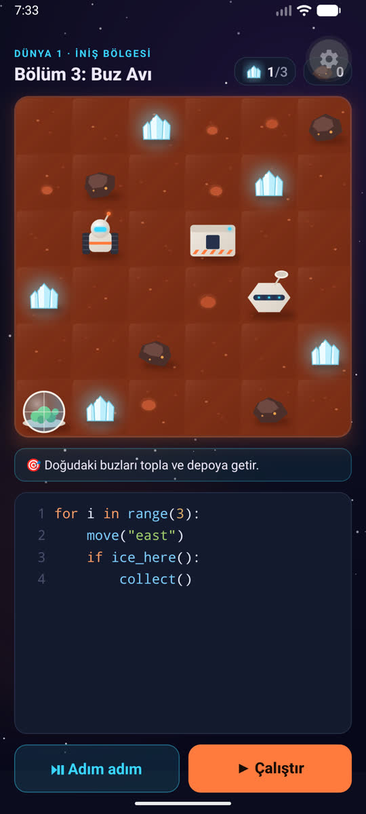

expotaslak1
Expo · 2D (Skia)BeğenilmediEkran kartında hesaplanan Mars dokusu, havada yüzen ada, hazır çizim karakterler (Kenney), küçük canlılık animasyonları.
Ne öğrendik
Ekipçe beğenilmedi. Aynı gün aynı sahne 3B olarak denendi (expotaslak2).